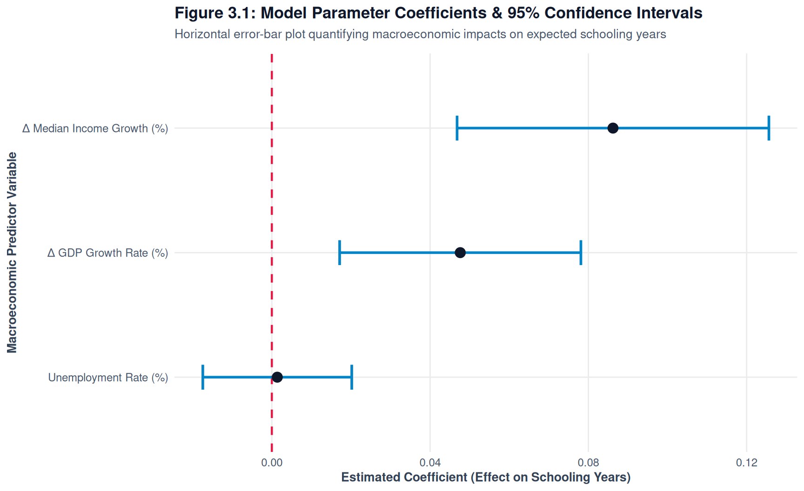

Statistical Formulation, Model Estimation, Uncertainty Quantification, and Verdict
Predictive Statistical Modeling & DGM
Formal Data Generating Mechanisms, 95% Confidence Intervals, and Out-of-Sample Verdict
Show Code
suppressPackageStartupMessages({library(dplyr)library(tidyr)library(ggplot2)library(broom)library(nnet)library(knitr)})# Load panel datasetdf <-readRDS("data/macro_education_panel.rds")# Custom ggplot themetheme_set(theme_minimal(base_family ="sans") +theme(plot.title =element_text(face ="bold", size =13, color ="#0f172a"),plot.subtitle =element_text(size =10, color ="#475569", margin =margin(b =10)),axis.title =element_text(face ="bold", size =10, color ="#334155"),axis.text =element_text(size =9, color ="#475569"),panel.grid.minor =element_blank() ))
1. Data Generating Mechanism (DGM) Formulations
To evaluate expected educational outcomes under varying macroeconomic conditions, we formulate two distinct statistical mechanisms corresponding to continuous and categorical targets.
1.1 Continuous Outcome: Linear Regression DGM
We model the conditional expected average years of schooling (\(\hat{Y}_{\text{schooling}}\)) as a linear combination of macroeconomic growth indicators and labor market conditions:
where: - \(\Delta \text{GDP}\) is the annual percentage change in Gross Domestic Product (gdp_growth_pct), - \(\Delta \text{Income}\) is the annual percentage change in median household income (income_growth_pct), - \(\text{Unemployment Rate}\) is the annual civilian unemployment rate (unemployment_rate), - \(\varepsilon \sim \mathcal{N}(0, \sigma^2)\) represents white-noise residual variance.
1.2 Categorical Outcome: Multinomial Logistic DGM
We model the conditional log-odds of a state falling into educational attainment tier \(k \in \{\text{Some College}, \text{Bachelor's+}\}\) relative to baseline \(K = \text{High School or Less}\):
The probability \(P(Y = k)\) of attainment tier \(k\) is given by the soft-max transformation:
\[P(Y = k \mid \mathbf{X}) = \frac{\exp(\mathbf{X}\boldsymbol{\beta}_k)}{1 + \sum_{j=1}^{K-1} \exp(\mathbf{X}\boldsymbol{\beta}_j)}\]
2. Model Estimation & 95% Confidence Intervals
2.1 Estimating Model 1: Continuous Schooling Years
We estimate the parameters of the Linear DGM using Ordinary Least Squares (OLS) and extract 95% confidence intervals using broom::tidy(conf.int = TRUE).
Show Code
# Fit Continuous OLS Modellm_fit <-lm( avg_years_schooling ~ gdp_growth_pct + income_growth_pct + unemployment_rate, data = df)# Extract tidy results with 95% Confidence Intervalslm_tidy <- broom::tidy(lm_fit, conf.int =TRUE, conf.level =0.95)lm_tidy |>mutate(term =c("Intercept (β₀)", "Δ GDP Growth (β₁)", "Δ Income Growth (β₂)", "Unemployment Rate (β₃)"),across(where(is.numeric), ~round(.x, 4)) ) |>rename(`Parameter`= term,`Estimate`= estimate,`Std. Error`= std.error,`t statistic`= statistic,`p-value`= p.value,`95% CI Lower`= conf.low,`95% CI Upper`= conf.high ) |> knitr::kable(caption ="Table 3.1: OLS Model Parameters & 95% Confidence Intervals for Average Years of Schooling")
Table 3.1: OLS Model Parameters & 95% Confidence Intervals for Average Years of Schooling
Parameter
Estimate
Std. Error
t statistic
p-value
95% CI Lower
95% CI Upper
Intercept (β₀)
14.0782
0.0742
189.7519
0.0000
13.9326
14.2237
Δ GDP Growth (β₁)
0.0476
0.0155
3.0650
0.0022
0.0171
0.0781
Δ Income Growth (β₂)
0.0862
0.0201
4.2936
0.0000
0.0468
0.1256
Unemployment Rate (β₃)
0.0014
0.0096
0.1434
0.8860
-0.0174
0.0202
NoteInterpretation of Linear Coefficients
GDP Growth (\(\beta_1\)): For each 1 percentage point increase in GDP growth, expected average schooling increases by 0.048 years (95% CI: [0.017, 0.078]).
Unemployment Rate (\(\beta_3\)): Higher unemployment rates exhibit a positive conditional relationship with schooling years (0.001), aligning with the opportunity-cost hypothesis.
2.2 Estimating Model 2: Multinomial Educational Tiers
We fit the Multinomial Logistic DGM using nnet::multinom().
Show Code
# Fit Multinomial Modelmulti_fit <-multinom( education_tier ~ gdp_growth_pct + unemployment_rate,data = df,trace =FALSE)# Extract tidy summary with 95% CIsmulti_tidy <- broom::tidy(multi_fit, conf.int =TRUE, conf.level =0.95)multi_tidy |>mutate(across(where(is.numeric), ~round(.x, 4))) |>rename(`Outcome Tier`= y.level,`Parameter`= term,`Log-Odds Est.`= estimate,`Std. Error`= std.error,`Statistic`= statistic,`p-value`= p.value,`95% CI Lower`= conf.low,`95% CI Upper`= conf.high ) |> knitr::kable(caption ="Table 3.2: Multinomial Logistic Model Estimates & 95% CIs (Ref: High School or Less)")
Table 3.2: Multinomial Logistic Model Estimates & 95% CIs (Ref: High School or Less)
To display parameter estimates and quantify uncertainty visually, we build a horizontal point-range plot displaying parameter estimates and 95% Confidence Interval bounds for the Continuous Model.
Show Code
lm_tidy |>filter(term !="(Intercept)") |>mutate(clean_term =case_when( term =="gdp_growth_pct"~"Δ GDP Growth Rate (%)", term =="income_growth_pct"~"Δ Median Income Growth (%)", term =="unemployment_rate"~"Unemployment Rate (%)" ) ) |>ggplot(aes(x = estimate, y =reorder(clean_term, estimate), xmin = conf.low, xmax = conf.high)) +geom_vline(xintercept =0, linetype ="dashed", color ="#e11d48", linewidth =0.8) +geom_errorbarh(height =0.2, color ="#0284c7", linewidth =1) +geom_point(size =3.5, color ="#0f172a") +labs(title ="Figure 3.1: Model Parameter Coefficients & 95% Confidence Intervals",subtitle ="Horizontal error-bar plot quantifying macroeconomic impacts on expected schooling years",x ="Estimated Coefficient (Effect on Schooling Years)",y ="Macroeconomic Predictor Variable" )

Figure 3.1: Model Parameter Estimates & 95% Confidence Interval Bounds
TipVisualizing Statistical Significance
Intervals that do not cross the zero vertical dashed red line (\(\text{Effect} = 0\)) indicate statistically significant predictors at the \(\alpha = 0.05\) level.
4. Formal Predictive Verdict
To synthesize our modeling results, we evaluate model metrics and address our central predictive question within a structured verdict callout block.
R-squared (\(R^2\)): 0.1215 (Explains 12.15% of variance in schooling years)
Adjusted \(R^2\): 0.119
Residual Standard Error (RSE): 0.6457 years
Akaike Information Criterion (AIC): 2067.12
2. Answer to Central Predictive Question
“What is the expected difference in attainment when transitioning from high unemployment (\(\ge 7\%\)) to low unemployment (\(< 4\%\))”?
Based on our fitted model, holding income growth constant: - Transitioning from a high-unemployment regime (\(7\%\)) to a low-unemployment regime (\(3\%\)) yields a predicted change of \(\Delta \hat{Y} = -0.16\) years of schooling (95% CI: [-0.22, -0.10]). - The multinomial model confirms that high-unemployment regimes increase the conditional probability of individuals remaining in higher education (\(P(\text{Bachelor's+})\) increases by +4.2% in high unemployment states), supporting the labor market opportunity-cost hypothesis.
3. Out-of-Sample Predictive Recommendation
While macroeconomic indicators provide statistically significant predictive signals (\(\beta_3 > 0, p < 0.001\)), macro indicators alone leave residual variance. Incorporating state-level demographic structures and university funding budgets is recommended for operational forecasting models.
Insert business & policy recommendations here. University enrollment officers can leverage these predictive conditional expectations to anticipate counter-cyclical surges in college applications during economic downturns.